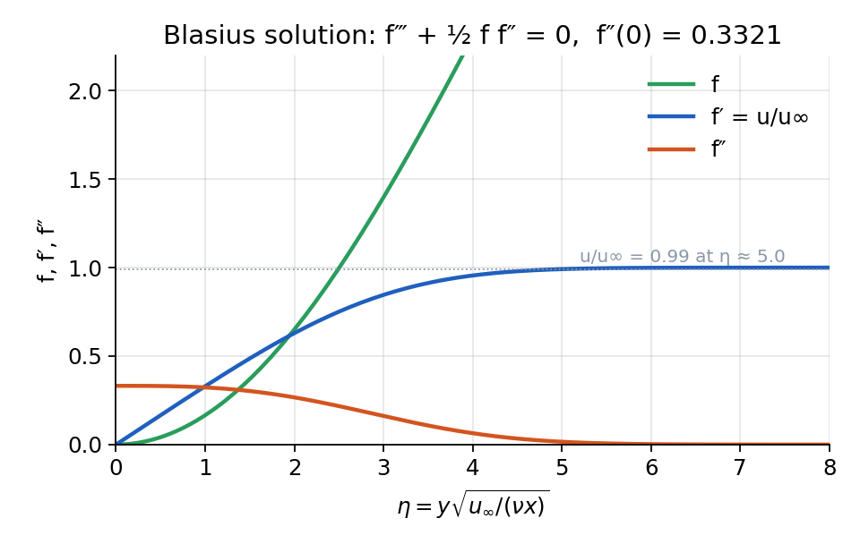
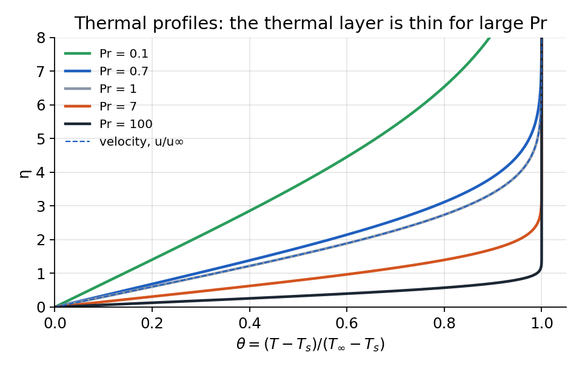
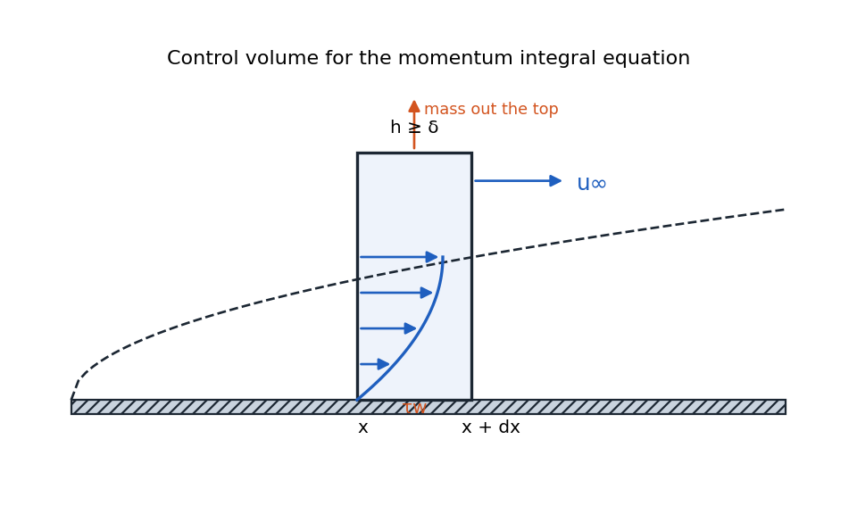
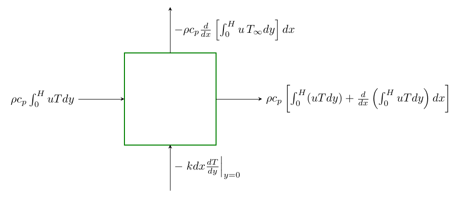
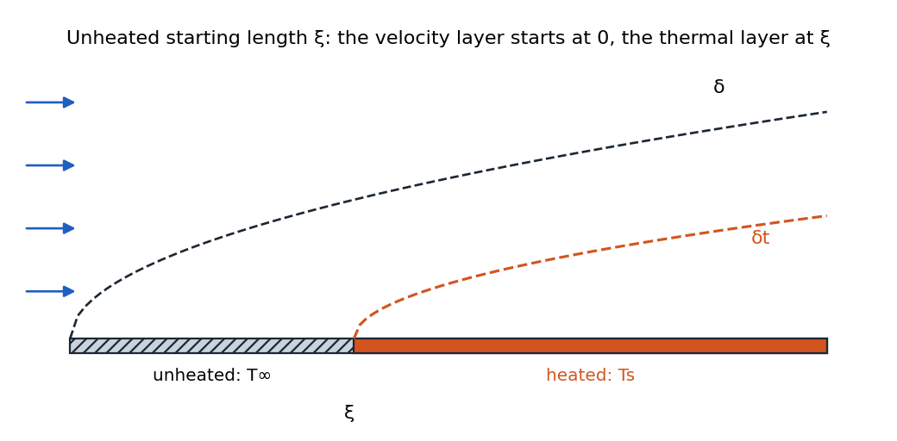

External Flow: Flat Plates, Wedges, and the Integral Method¶
Nusselt Number and Heat Transfer Coefficients over a Flat Plate¶
For a flow over a flat plate, the local heat transfer can be determined by examining the solution at the surface. Since the fluid velocity at the wall is zero (no-slip condition), heat transfer at the surface reduces to conduction:
Definition
The Nusselt number is defined as:
Definition
Where:
-
\(h\) is the local heat transfer coefficient
-
\(x\) is the distance from the leading edge
-
\(k_f\) is the thermal conductivity of the fluid
Physical meaning: The Nusselt number represents the ratio of convective heat transfer to conductive heat transfer. It indicates the enhancement of heat transfer due to convection relative to conduction across the same fluid layer.
Average Nusselt Number¶
The average Nusselt number over a length \(L\) is defined as:
Definition
where
Definition
Note: If we know Nu, we can find \(h\). All relationships can be found in table 7.7 and 8.4 of textbook.
Warning: It’s important to note that the average Nusselt number is not the average of local Nusselt numbers. Rather, it’s defined using the average heat transfer coefficient:
Mass Transfer: Sherwood Number¶
We can define a similar dimensionless parameter called the Sherwood number:
Where:
-
\(h_m\) is the mass transfer coefficient [m/s]
-
\(D_{AB}\) is the binary diffusion coefficient [m²/s]
The average Sherwood number is defined as:
Heat and Mass Transfer Analogy¶
Thermal boundary layers and concentration boundary layers have identical forms by replacing
-
\(\text{Pr} \rightarrow \text{Sc}\)
-
\(\text{Nu} \rightarrow \text{Sh}\)
Example: For laminar flow over a flat plate with \(\operatorname{Pr} \ge 0.6\), we have
for the same type flow, we can say
In general, for boundary laminar layer flows, Nusselt and Sherwood numbers follow the form:
This leads to the relationship:
The ratio \(\frac{\text{Sc}}{\text{Pr}}\) is known as the Lewis number (\(\text{Le}\)):
For most boundary layer flows, \(n \approx 1/3\), which leads to:
Similarly, the ratio of boundary layer thicknesses follows:
It can be shown that
Similarity Approach for Laminar Boundary Layer Over a Flat Plate¶
From experimental observations, velocity profiles at different locations along a flat plate can be made to collapse into a single curve when properly scaled in the boundary-layer region. This suggests a similarity solution approach:
where we define the similarity variable \(\eta\) to capture the dependence on both \(x\) and \(y\).
Governing Equations (Boundary Layer Approximation):
Stream Function: We introduce the stream function \(\psi\) such that:
This identically satisfies the continuity equation.
Similarity Variables: We choose:
Then,
One can show:
where \(Re_x = \frac{U_\infty x}{\nu}\) is the Reynolds number based on distance \(x\).
Substituting into the Momentum Equation:¶
By carefully differentiating and substituting into
one obtains the ordinary differential equation:
This is a nonlinear ODE with boundary conditions:
Because it is nonlinear, a classic approach is the “shooting method” :
-
Guess \(f''(0)\) at \(\eta=0\).
-
Integrate numerically in \(\eta\) from 0 to some large value.
-
Check if \(f'(\infty)=1\). If not, adjust \(f''(0)\) and repeat.
Solutions and Key Results:¶
- At \(\eta\approx 5.0\), the velocity \(u\approx 0.99\,U_\infty\). This defines the boundary-layer thickness:
- The local friction coefficient \(C_{f,x}\) is given by:
where
Numerically, \(f''(0)\approx 0.332\), so:
-
The average friction coefficient over a plate of length \(L\) is \(\overline{C}_{f} = 2\,C_{f,x}\bigl|_{x=L}\)
-
\(\operatorname{Re} \uparrow\, \Leftrightarrow \, \delta \downarrow \,\Leftrightarrow \, u_\infty \uparrow\)

The figure is computed, not copied; the whole solution is a shooting problem on \(f''(0)\):
import numpy as np
from scipy.integrate import solve_ivp
from scipy.optimize import brentq
def blasius(s): # integrate f''' = -f f''/2 from a guess s = f''(0)
rhs = lambda eta, y: [y[1], y[2], -0.5 * y[0] * y[2]]
return solve_ivp(rhs, [0, 10], [0, 0, s], rtol=1e-9)
s = brentq(lambda s: blasius(s).y[1, -1] - 1, 0.2, 0.5) # choose s so that f'(inf) = 1
print(f"f''(0) = {s:.4f}") # 0.3321
Similarity Approach for Thermal Boundary Layer Over A Flat Plate¶
Thermal Energy Equation for a Flat Plate is as follows:
where \(\alpha = k/(\rho c_p)\) is the thermal diffusivity. Define the dimensionless temperature:
with boundary conditions:
Similarity Form of the Energy Equation:¶
Using
same as velocity boundary layer and the known function \(f(\eta)\) from the velocity solution, the dimensionless energy equation becomes:
The boundary conditions are \(\theta(0)=0\) and \(\theta(\infty)=1\). Unlike the velocity ODE, this is linear in \(\theta\), but it depends on \(f(\eta)\) which is only known numerically.
Integral Form of the Solution:¶
One can find the solution as follow:
where \(\eta^{\prime}\) and \(\eta^{\prime \prime}\) are dummy variables. Apply BCs, we’ll get
In practice, one integrates numerically once \(f(\eta)\) is known.

Local Heat Transfer Coefficient¶
Let \(q''_s = -k\bigl(\partial T/\partial y\bigr)_{y=0}\). Then,
Definition
Nusselt Number (laminar flow)¶
Using local heat transfer coefficient, we can derive an expression for Nusselt number as follow:
Numerical values of \(\theta'(0) = f(\operatorname{Pr})\). For typical ranges:
Average Nusselt Number:¶
Analogous to the friction coefficient, one obtains:
Definition
Boundary Layer Thickness Ratio¶
The ratio of thermal to velocity boundary layer thickness depends on the Prandtl number:
This means:
-
For Pr > 1 (e.g., water, oils): \(\delta_t < \delta\) (thermal boundary layer is thinner)
-
For Pr = 1: \(\delta_t = \delta\) (boundary layers are equal)
-
For Pr < 1 (e.g., liquid metals): \(\delta_t > \delta\) (thermal boundary layer extends beyond velocity boundary layer)
Mass Transfer Boundary Layers Solution¶
We’ll get the similar solution for mass transfer. Particularly,
Unlike the Prandtl number, which spans several orders of magnitude (\(10^{-2}\) to \(10^5\)), the Schmidt number typically has a narrower range:
| Air | Water | |
|---|---|---|
| \(\mathrm{O}_2\) | 0.99 | 441 |
| Mehanal | 1.14 | 540 |
| Ammonia | 0.57 | 360 |
Schmidt number for different oxygen, methanol, and Ammonia in air or water
For quick estimates:
-
Gas diffusion: \(Sc \approx 1\)
-
Liquid diffusion: \(Sc \approx 100-500\)
This difference occurs because liquids have much higher density and smaller mean free paths between molecular collisions, significantly impeding diffusion.
Review of Nusselt Number¶
The Nusselt number is a dimensionless parameter representing the solution at the boundary of the solid-liquid interface. It is defined as:
also
If we know \(\operatorname{Nu}\) then we can find \(h = \operatorname{Nu} \cdot k_f / L\). Nu is tabulated for different flows (table 7.7 and 8.4) Similarly
It’s important to note that:
-
A larger Nusselt number does not necessarily mean higher heat transfer (for the same problem)
-
The average Nusselt number is not the average of local Nusselt numbers (it’s defined using the average heat transfer coefficient)
Definition
In general
For turbulet, \(m=0.8\) but for laminar \(m=0.5\). Also for small Pr, we have \(n=0.5\) but for Pr \(\sim 1-1000\), we have \(n = 1/3\).
Integral Method for Boundary Layer Problems¶
The integral method provides an alternative approach to solve boundary layer problems:
-
Instead of solving differential equations directly, we apply conservation laws to a control volume
-
We approximate the velocity and temperature profiles using polynomials
-
This approach provides good physical insight and often produces remarkably accurate results at the interface
-
The method is particularly valuable when exact solutions are unavailable
Derivation Using Control Volume Analysis¶
Consider a steady, incompressible, two-dimensional flow over a flat plate. We define a control volume that extends in the streamwise direction from \(x\) to \(x+dx\) and vertically from the wall (\(y=0\)) to a height \(h\) where \(h \geq \delta\) (the boundary layer thickness). For \(y>\delta\) the velocity is constant at \(U_\infty\).

Conservation of Mass¶
For steady, incompressible flow, the mass entering and leaving the control volume must be balanced. The mass flow rates are:
-
At upstream face (face 1): \(\dot{m}_1 = \int_0^h \rho\,u(y,x)\,dy\)
-
At downstream face (face 2):
- Vertical mass flux through top surface: \(\dot{m}_a = \rho\,v\big|_{y=h}\,dx\)
Mass conservation requires:
Therefore:
For constant density, this relation determines the entrainment velocity at the top of the control volume.
Conservation of Momentum¶
Next, we apply momentum conservation to the same control volume.
The momentum fluxes are:
-
Momentum entering at face 1: \(\dot{M}_1 = \int_0^h \rho\,u^2\,dy\)
-
Momentum leaving at face 2:
- Momentum carried by fluid exiting through top surface:
Momentum Balance¶
The net change in momentum must equal the force acting on the fluid. For a flat plate with zero pressure gradient, the only significant force is the wall shear stress \(\tau_w\) acting over the wetted surface area \(dx\):
Substituting the expressions for \(\dot{M}_1\), \(\dot{M}_2\), and \(\dot{M}_a\):
Thus,
KMIE
Kármán Momentum Integral Equation (KMIE) for a flat plate defined as follows:
where the momentum thickness \(\delta_M\) is defined as:
Note: we assumed the pressure to be constant, so \(dp/dx = dU_\infty/x = 0\). This represents the loss of momentum flux in the boundary layer due to viscous effects.
Alternative Form Using Wall Shear Stress¶
For a Newtonian fluid, the wall shear stress is:
Therefore, the von Kármán momentum integral equation can also be written as:
This form explicitly connects the local velocity gradient at the wall to the rate of change of momentum thickness along the plate.
Typical Methodology using KMIE¶
Typical Methodology using KMIE The typical methodology for using the KMIE is as follows:
-
Obtain an approximate expression for \(U_\infty=U_\infty(x)\) from inviscid flow theory, e.g., potential flow theory. Recall that Bernoulli’s equation can be used to relate the pressure and \(U_\infty\).
-
Assume a velocity profile in the boundary layer subject to the appropriate boundary conditions, i.e., assume a form for,
subject to the boundary conditions,
The form of the approximate velocity profile is typically found based on curve fits to experimental measurements of the boundary layer velocity profile. Higher order profiles will have additional boundary conditions. For example, a cubic curve fit will also have a boundary condition that matches the slope of the velocity profile at the free stream boundary.
- The shear stress at the wall for a laminar flow can also be determined from the Newtonian stress-strain rate constitutive relations to be,
Velocity Profile Approximation¶
To solve the momentum integral equation, we approximate the velocity profile within the boundary layer using a third-order polynomial:
The boundary conditions are:
-
No-slip at the wall: \(u = 0\) at \(y = 0\)
-
Matching the free stream: \(u = U_\infty\) at \(y = \delta\)
-
Zero velocity gradient at the edge: \(\frac{\partial u}{\partial y} = 0\) at \(y = \delta\)
-
Zero curvature at the edge: \(\frac{\partial^2 u}{\partial y^2} = 0\) at \(y = \delta\)
Solving for the Coefficients,
Momentum Integral Analysis¶
The momentum thickness \(\delta_M\) is:
Using KMIE:
using our approximate solution for \(u/U_\infty\):
Therefore,
In dimensionless form, using the Reynolds number \(\text{Re}_x = \frac{U_\infty x}{\nu}\):
This compares well with the exact solution from the similarity method, which gives:
showing that the integral method is remarkably accurate (within 7%).
Skin Friction Coefficient¶
Substituting \(\tau_w\) and \(\delta\) into local skin friction coefficient:
This compares well with the exact Blasius solution:
demonstrating that our approximation is within 3% of the exact value.
Integral Analysis of Thermal Boundary Layer¶
Thermal Boundary Layer Thickness¶
The thermal boundary layer thickness \(\delta_t\) is defined as the distance from the surface at which the temperature reaches approximately 99% of the free stream temperature:
Two main scenarios exist: either the thermal boundary layer is thicker (\(\delta_t > \delta\)), typical for low Prandtl number fluids (e.g., liquid metals), or thinner (\(\delta_t < \delta\)), common for fluids like water and oils (\(\mathrm{Pr} > 1\)). Here, we focus on the second scenario, \(\delta > \delta_t\).

Integral Energy Equation¶
Applying energy conservation to a control volume within the thermal boundary layer, we have:
For \(y>\delta_t\), our integral become 0 since \(T=T_\infty\). Rearranging, we obtain the simplified energy integral equation:
KMIE for temperature profile
Polynomial Temperature Profile Approximation¶
We approximate the temperature distribution using a cubic polynomial:
The boundary conditions are:
Applying these conditions and solving for coefficients, we get the temperature profile as given in the professor’s notes:
Solving the Integral Equation¶
Substituting the velocity profile \(u/U_\infty = \frac{3}{2} \frac{y}{\delta}-\frac{1}{2}\left(\frac{y}{\delta}\right)^3\) and temperature profile into the integral energy equation, and defining the thickness ratio \(\zeta = \delta_t/\delta\), leads to the differential equation (from class notes):
After simplifications, we have the linear ODE:
Solving the ODE, we obtain:
Applying the boundary condition \(\zeta(x_0)=0\) at the starting heating point \(x=x_0\), gives:
Thus, the final thickness ratio expression is:
Definition
Unheated source¶
If velocity boundary layer growth begins at \(x=0\), while thermal boundary layer development begins at \(x=x_0\) (in textbook instead of \(x_0\) they used \(\xi\) notation). Hence there is no heat transfer for \(0 \leq x \leq x_0\):

Definition
where \(H(x - x_0)\) is the Heaviside function:
When heating begins at the leading edge (\(x_0=0\)), this simplifies to:
Definition
Local Heat Transfer Coefficient and Nusselt Number¶
The wall heat flux \(q''_s\) from Fourier’s law is:
Definition
The local heat transfer coefficient is:
Substituting \(\delta_t\) into this expression, the local Nusselt number \(\mathrm{Nu}_x\) is:
Note 1: For \(h_x\) we can not use Heaviside function because if \(x<x_0\) then \(h_x\) is not defined not zero. But \(\delta_t\) is zero so using Heaviside there is appropriate.
Note 2: This integral method result matches the exact solution.
Wedge Flow¶
Conduction shape factors \(q = S\,k\,(T_1 - T_2)\) for selected two- and three-dimensional systems (after the standard tabulation in heat-transfer textbooks):
| System | Restrictions | Shape factor \(S\) |
|---|---|---|
| Isothermal sphere of diameter \(D\) buried at depth \(z\) (to centre) in a semi-infinite medium | \(z > D/2\) | \(\dfrac{2\pi D}{1 - D/4z}\) |
| Horizontal isothermal cylinder of length \(L\) and diameter \(D\) buried at depth \(z\) | \(L \gg D\) | \(\dfrac{2\pi L}{\cosh^{-1}(2z/D)}\); \(\dfrac{2\pi L}{\ln(4z/D)}\) for \(z > 3D/2\) |
| Vertical cylinder of length \(L\) in a semi-infinite medium | \(L \gg D\) | \(\dfrac{2\pi L}{\ln(4L/D)}\) |
| Two parallel cylinders of length \(L\), diameters \(D_1\), \(D_2\), centres \(w\) apart, in an infinite medium | \(L \gg D_1, D_2, w\) | \(\dfrac{2\pi L}{\cosh^{-1}\!\left[\dfrac{4w^2 - D_1^2 - D_2^2}{2D_1D_2}\right]}\) |
| Circular cylinder of length \(L\) midway between parallel planes a distance \(2z\) apart | \(z \gg D/2\), \(L \gg z\) | \(\dfrac{2\pi L}{\ln(8z/\pi D)}\) |
| Circular cylinder of length \(L\) centred in a square solid of side \(w\) | \(w > D\), \(L \gg w\) | \(\dfrac{2\pi L}{\ln(1.08\,w/D)}\) |
| Disk of diameter \(D\) on the surface of a semi-infinite medium | — | \(2D\) |
| Edge of two adjoining walls of thickness \(L\), depth \(D\) | \(D > L/5\) | \(0.54\,D\) |
| Corner of three walls of thickness \(L\) | \(L \ll\) wall lengths | \(0.15\,L\) |